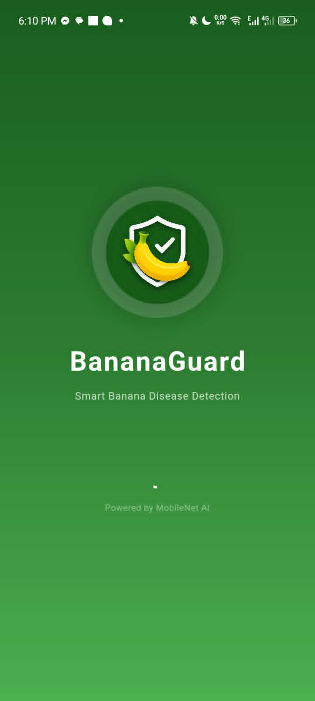
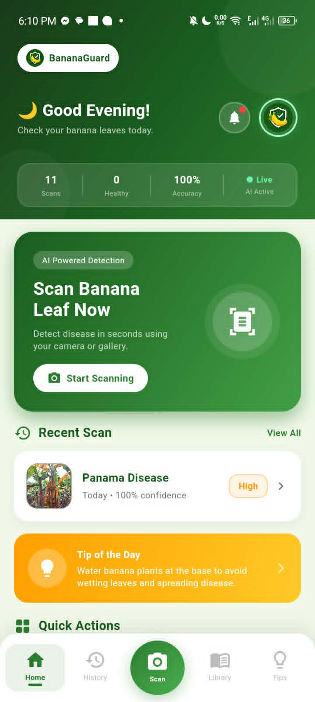
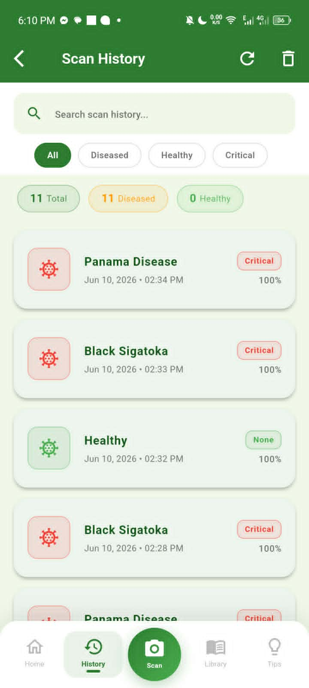
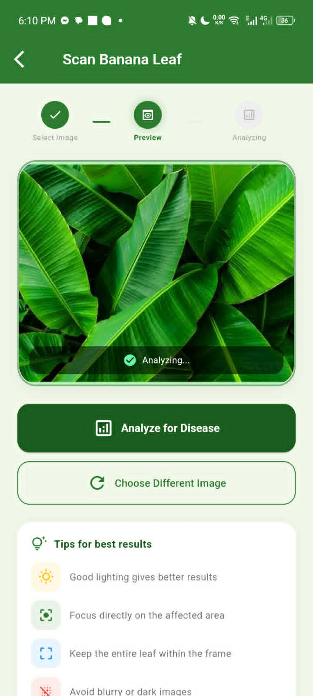
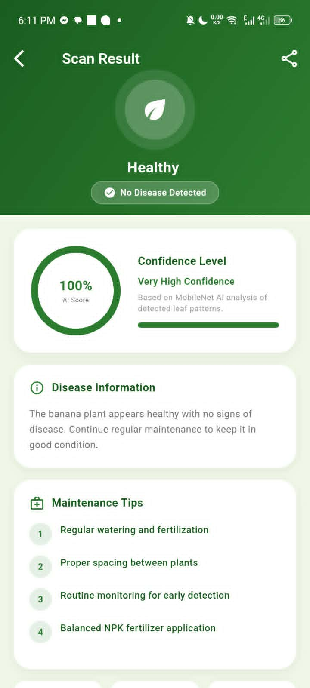
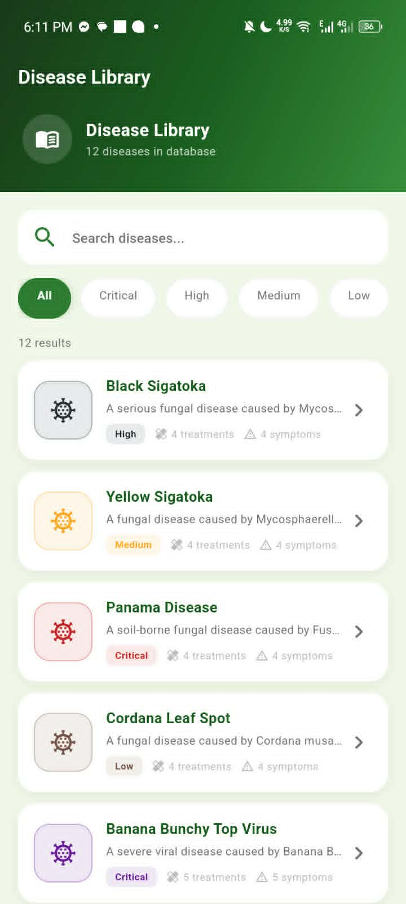
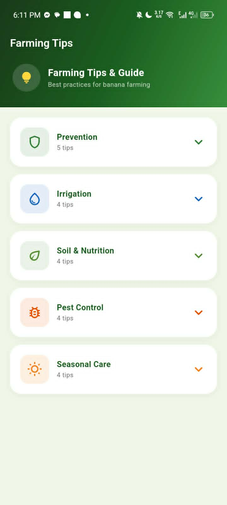

BananaGuard - Banana Disease Detection App
AI-powered mobile application for detecting banana plant diseases
BananaGuard Final Project
2nd Semester 2025-26Mobile application using machine learning to detect banana plant diseases. Built with Flutter and TensorFlow, featuring real-time image classification and disease identification for Filipino farmers.
Project Presentation Video
Watch the full BananaGuard presentation
App Screenshots







Flutter
TensorFlow
Machine Learning
Image Classification
Mobile App
Previous Activities & Outputs
Data mining exercises and learning activities
Important Note
Please use your DNSC Google account to access these Google Drive folders. Access may be restricted to authorized DNSC accounts only.